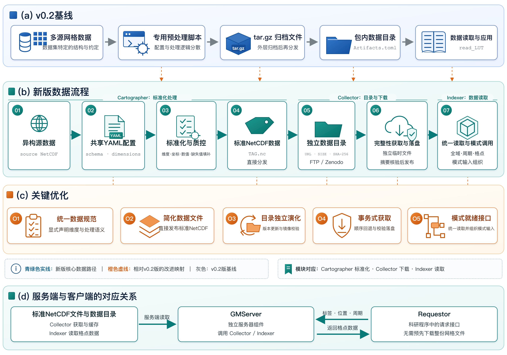
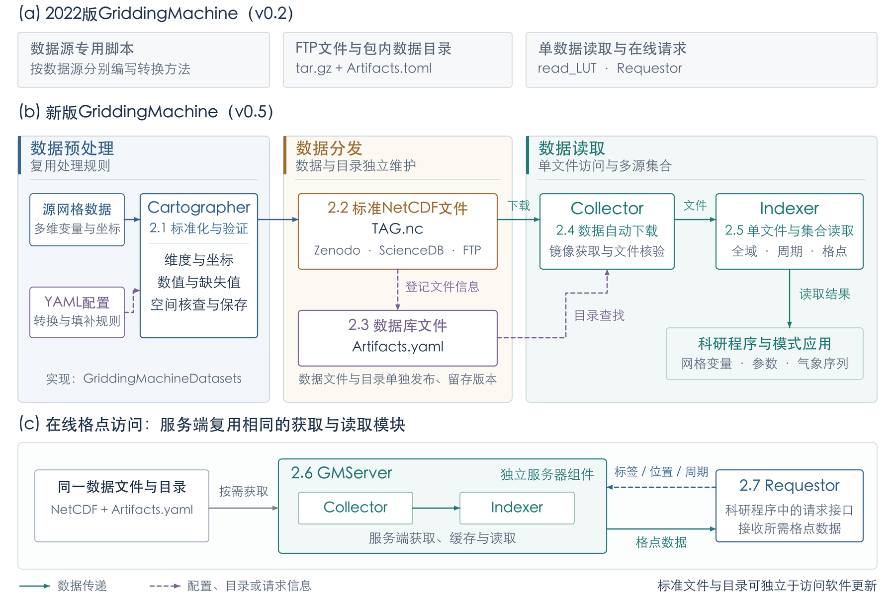

<!doctype html><html lang="zh-CN"><meta charset="utf-8"><meta name="viewport" content="width=device-width,initial-scale=1"><title>图1新旧对照</title><style>body{margin:0;background:#edf1f4;color:#203349;font:16px/1.7 system-ui,sans-serif}header{position:sticky;top:0;background:#fff;padding:18px 28px;border-bottom:1px solid #d4dce4;z-index:2}h1{font-size:22px;margin:0 0 10px}button{padding:7px 18px;margin-right:7px;background:white;border:1px solid #b7c7d3;border-radius:5px;color:#203349;cursor:pointer}button.active{background:#217973;color:white;border-color:#217973}main{padding:22px;display:grid;gap:22px}.compare{grid-template-columns:1fr 1fr}article{background:white;padding:15px;border:1px solid #d4dce4;border-radius:6px}h2{font-size:18px;margin:0 0 10px}img{width:100%;height:auto;display:block}p{margin:10px 0 0}.hidden{display:none}@media(max-width:900px){.compare{grid-template-columns:1fr}}</style><header><h1>图1新旧对照</h1><button class="active" onclick="show('new',this)">新版</button><button onclick="show('old',this)">原版</button><button onclick="show('both',this)">并排对照</button><p>新版保留老师的功能模块与版本称谓；区分配置、数据文件、目录和读取接口。正式稿已采用彩色组件版，此页保留历史对照。</p></header><main><article id="old" class="hidden"><h2>替换前主图</h2></article><article id="new" class=""><h2>系统论文风格对照版</h2></article></main><script>function show(mode,button){document.querySelectorAll('button').forEach(b=>b.classList.remove('active'));button.classList.add('active');document.querySelector('main').classList.toggle('compare',mode==='both');for(const id of ['old','new'])document.getElementById(id).classList.toggle('hidden',mode!=='both'&&mode!==id);}</script></html>